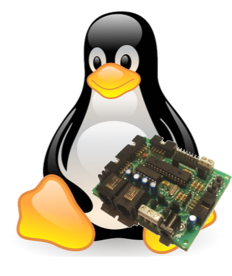
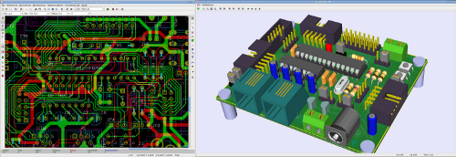

Las ideas principales sobre Hardware libre las publicamos en el artículo “Hardware libre: clasificación y desarrollo de hardware reconfigurable en entornos GNU/Linux”[1] presentado en el VI congreso de Hispalinux en Septiembre de 2003.
Durante estos años, hemos publicado otros artículos[2][3][4][5] y presentaciones con los detalles de nuestros diseños libres. En las jornadas sobre Software libre de la UAM, en Marzo de 2007, revisamos algunos conceptos y simplificamos la clasificación, en la presentación titulada: “Hardware Libre: conociendo las tripas”[6]. Aquí os dejo la versión on-line:
Hardware Libre: conociendo las tripas
Se puede resumir en las siguientes ideas:Grupo I
Sin restricciones.
Lo forman las placas libres que han sido diseñadas sólo con software libre.
En este grupo NO hay restricciones en la compartición. Además,
el formato de los planos será también abierto y conocido por todos,
permitiendo la aparición de otras herramientas compatibles.
Este es el hardware libre “pata negra”. Es, según mi opinión,
a lo que habría que tender. El software libre más avanzado que existe hasta
el momento para diseño electrónico es el
Kicad.

Grupo II
1 restricción.
Hardware libre diseñado con herramientas propietarias pero multiplataforma,
siendo alguna de las plataformas soportadas un sistema operativo libre.
Los diseños de este grupo se pueden compartir, pero será necesario adquirir
la licencia de estas herramientas o en caso de ser gratuitas,
someterse a las restricciones impuestas por la empresa creadora
(limitación en tamaño de las placas, de las caras, etc). Pero al menos,
corren en algún sistema operativo libre. La herramienta representativa de este grupo
es el Eagle, de Cadsoft.
Grupo III
2 restricciones.
Hardware libre diseñado con herramientas propietarias que sólo
corren en sistemas operativos propietarios.
Para compartir el hardware los usuarios deben adquirir una licencia y además
utilizar el S.O propietario (normalmente Windows)
que requiere a su vez de otra licencia.
Las personas que no usan este S.O a diario (entre los que me incluyo) tienen
más restricciones para poder reutilizar el hardware libre.
Cualquier hardware diseñado con Orcad, Protel o Pads por ejemplo,
entrarían dentro de esta categoría.
Hardware libre hoy
Actualmente, en el 2009, el hardware libre se ha extendido y ha ido en aumento su uso. Algunos de los más conocidos son Arduino (y todos sus derivados, como por ejemplo Sanguino o Seduino), Pinguino, el proyecto Reprap (una impresora 3D auto-replicable), openMoko (un teléfono móvil) y OSWALD (un PC ultra-móvil). Nuestros desarrollos también son libres, destacando la Skypic, sky293 y Skycontrol.
Los grupos más numerosos son el II y el III. Es decir, hardware libre con restricciones en su compartición. En mi opinión es debido a la resistencia al cambio. Las herramientas de diseño electrónico son complejas de aprender. Una vez que se ha aprendido a manejar una con la que se es muy productivo, cuesta mucho esfuerzo cambiarse a una nueva. Si se aborda el cambio, el diseñador tardará un tiempo razonable en volver a ser productivo y lamentablemente ese tiempo no suele estar disponible. Por ello, los que usan Orcad u Eagle, tenderán a seguir usándolos.
(Continuará...)
Referencias
[1] Ivan González, Juan González, Francisco Gómez-Arribas, Hardware libre: clasificación y desarrollo de hardware reconfigurable en entornos GNU/Linux, Actas del VI Congreso de Hispalinux, Universidad Rey Juan Carlos I, Septiembre 2003. [Lectura en línea] [Descargar]
[2] Juan González, Pablo Haya, Sergio Lopez-Buedo y Eduardo Boemo, Tarjeta entrenadora para FPGA, basada en hardware abierto, Actas del Seminario Hispabot 2003, Alcalá de Henares, Madrid, Mayo 2003. [ Lectura en línea] [Descargar]
[3] Juan González, Andrés Prieto-Moreno, Herramientas hardware y software para el desarrollo de aplicaciones con Microcontroladores PIC bajo plataformas GNU/Linux, Actas de las III Jornadas de Software Libre, Universidad Pontificia de Salamanca en Madrid. Mayo 2004. [ Lectura en línea] [Descargar]
[4] Juan González-Gómez y Andres Prieto-Moreno Torres., Hardware libre: la Tarjeta Skypic, una Entrenadora para Microcontroladores PIC, Actas del I Congreso de Tecnologías de Software Libre, CTSL 2005, pp. 57-66. Factultad de Informática, A Coruña. Julio 2005. [ Lectura en línea] [Descargar]
[5] Xavier De Blas Foix, Juan Gonzalez-Gomez, Proyecto Chronojump: Sistema de Medida y Gestión de la Capacidad de Salto usando Software y Hardware Libres , Actas del I Congreso de TecnologÃas de Software Libre, CTSL 2005, pp. 123-131. Factultad de Informática, A Coruña. Julio 2005. [ Lectura en línea] [Descargar]
[6] Juan González, Hardware libre: conociendo las tripas. Jornadas de Software Libre en la UAM. Escuela politécnica Superior. Madrid. Marzo-2007. [Lectura en línea] [Descargar]
Hello Juan,
I just see this blog, and very happy to hear you sound. Everything looks good!?
From Hamburg